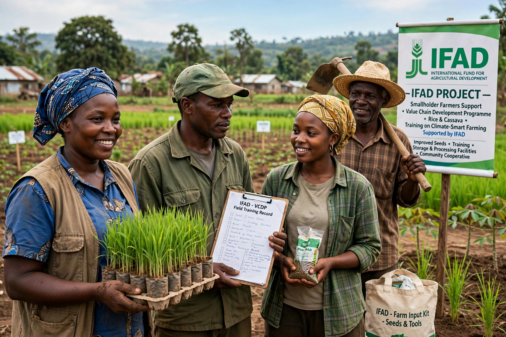

| Abbreviation | IFAD |
|---|---|
| Formation | 1977 |
| Headquarters | Rome, Italy |
| Membership | 177 Member States |
The International Fund for Agricultural Development (IFAD) is an international financial institution and specialized agency of the United Nations dedicated to eradicating poverty and hunger in rural areas of developing countries. It was established in 1977 following the 1974 World Food Conference and is headquartered in Rome.

IFAD provides low-interest loans and grants to finance agricultural and rural development projects aimed at smallholder farmers, rural women, Indigenous peoples and other marginalized groups. Areas include rural finance, climate adaptation, value chains, land and water management, and youth employment.
Its Governing Council of Member States and Executive Board oversee operations; the President serves a four-year term. Funding comes mainly from periodic replenishments by Member States, supplemented by borrowing and cofinancing. IFAD works alongside FAO and the World Food Programme as one of the Rome-based agencies.